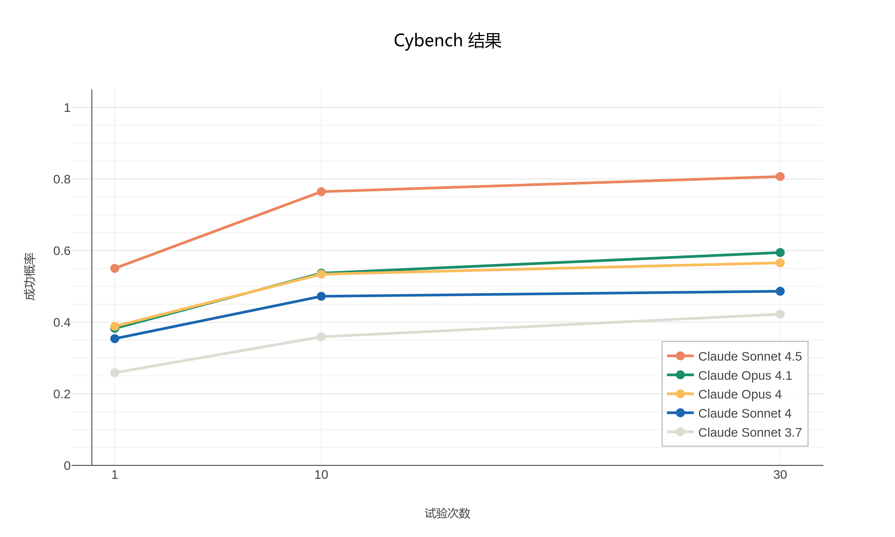
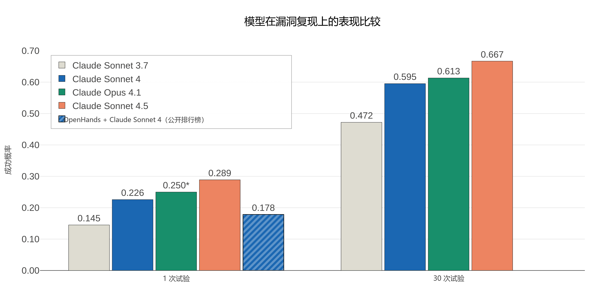

为网络防御者构建AI
📖 中文摘要
专业术语注解
漏洞：软件或系统中的安全缺陷，可能被攻击者利用网络防御：保护计算机系统免受攻击的安全措施CTF：捕获旗帜竞赛，一种通过实战题目锻炼安全技能的比赛补丁：修复软件漏洞的代码修改涌现能力：随模型变大而自动出现、并非刻意训练出来的能力恶意软件：用于攻击或破坏计算机系统的有害程序📄 中文全文
- 分类： 政策（Policy）
- 来源： https://www.anthropic.com/research/building-ai-cyber-defenders
政策前沿红队
2025年10月3日
AI 模型现在在实践中、而不仅仅在理论上，对网络安全任务有用。随着研究和经验证明了前沿 AI 作为网络攻击者工具的价值，我们投入资源改进 Claude 帮助防御者检测、分析和修复代码及已部署系统中漏洞的能力。这项工作使 Claude Sonnet 4.5 在发现代码漏洞和其他网络技能方面达到或超过了我们仅两个月前发布的前沿模型 Opus 4.1。采用并试验 AI 将是防御者跟上步伐的关键。
我们相信，我们现在正处于 AI 对网络安全影响的拐点。
多年来，我们的团队一直在仔细跟踪 AI 模型的网络安全相关能力。最初，我们发现模型在高级和有意义的技能方面并不特别强大。然而，在过去一年左右的时间里，我们注意到一个转变。例如：
* 我们证明，模型能够在模拟中复现历史上代价最高的网络攻击之一——2017 年的 Equifax 数据泄露事件。
* 我们让 Claude 参加网络安全竞赛，它在某些情况下表现优于人类团队。
* Claude 帮助我们在我们自己的代码中发现漏洞，并在发布前修复它们。
在今年夏天的 DARPA AI 网络挑战赛中，团队使用 LLM（包括 Claude）构建"网络推理系统"，检查数百万行代码以寻找需要修补的漏洞。除了插入的漏洞外，团队还发现了（有时修复了）此前未发现过的、非合成的漏洞。在竞赛环境之外，其他前沿实验室现在也应用模型来发现和报告新型漏洞。 与此同时，作为我们保障（Safeguards）工作的一部分，我们在自己的平台上发现并打乱了利用 AI 扩大行动的威胁行为者。我们的保障团队最近发现（并打乱）了一个"氛围黑客"（vibe hacking）案例，一名网络罪犯利用 Claude 构建了一个大规模的敲诈勒索计划，而以前这需要整整一个团队的人。保障团队还检测并制止了 Claude 被用于日益复杂的间谍活动——包括针对关键电信基础设施——其行为者表现出与中国 APT 行动一致的特征。 所有这些证据线索让我们认为，我们正处于网络生态系统的一个重要拐点，从这里开始的进展可能会变得非常快，或使用量可能会增长得非常快。 因此，现在是加速防御性 AI 使用以确保代码和基础设施安全的重要时刻。我们不应把从 AI 中获得的网络优势拱手让给攻击者和罪犯。虽然我们将继续投资于检测和打乱恶意攻击者，但我们认为最具可扩展性的解决方案是构建赋能那些守护我们数字环境的人——如保护企业和政府的安全团队、网络安全研究人员以及关键开源软件的维护者——的 AI 系统。 在 Claude Sonnet 4.5 发布之前，我们开始做这件事。
Claude Sonnet 4.5：强调网络技能
随着 LLM 规模的扩大，"涌现能力"（emergent abilities）——在较小模型中不显现、也不一定是模型训练明确目标的技能——会出现。事实上，Claude 执行网络安全任务的能力，如在校验旗标（Capture-the-Flag, CTF）挑战中寻找和利用软件漏洞，一直是开发通用有用 AI 助手的副产品。 但我们不想仅仅依赖通用模型的进步来更好地武装防御者。由于 AI 和网络安全演进中这一时刻的紧迫性，我们投入了专门的研究人员，让 Claude 在代码漏洞发现和修补等关键技能上做得更好。 这项工作的成果反映在 Claude Sonnet 4.5 中。它在网络安全的许多方面与 Claude Opus 4.1 相当或更优，同时更便宜、更快。
来自评估的证据
在构建 Sonnet 4.5 时，我们让一个小型研究团队专注于增强 Claude 在代码库中发现漏洞、修补漏洞以及测试模拟部署的安全基础设施弱点的能力。我们选择这些任务，是因为它们反映了防御方的关键工作。我们刻意避免明显有利于进攻工作的增强——如高级漏洞利用或编写恶意软件。我们希望让模型能够在部署前发现不安全的代码，并发现和修复已部署代码中的漏洞。当然，还有许多我们没有关注的关键安全任务；在本文末尾，我们详细阐述了未来方向。 为了测试我们研究的效果，我们对模型运行了行业标准的评估。这些评估能够在模型之间进行清晰的比较，衡量 AI 进步的速度，并且——尤其是对于新颖的、外部开发的评估——提供了一个良好的指标，确保我们不是在针对自己的测试进行教学。 在运行这些评估时，一件突出的事情是多次运行它们的重要性。即使对一大组评估任务来说计算成本很高，它也能更好地捕捉一个有动机的攻击者或防御者在任何特定现实世界问题上的行为。这样做不仅揭示了 Claude Sonnet 4.5 令人印象深刻的表现，也揭示了旧几代模型的表现。
Cybench
我们跟踪了一年多的评估之一是 Cybench，一个取材于 CTF 竞赛挑战的基准。1 在这项评估上，我们看到 Claude Sonnet 4.5 取得了惊人的进步，不仅超过 Claude Sonnet 4，甚至超过 Claude Opus 4 和 4.1 模型。也许最令人瞩目的是，Sonnet 4.5 每个任务只尝试一次的成功概率，就高于 Opus 4.1 每个任务尝试十次的成功概率。这个评估中的挑战反映了相当复杂、长时的工作流程。例如，一个挑战涉及分析网络流量、从流量中提取恶意软件，以及反编译和解密恶意软件。我们估计，这需要一个熟练的人类至少一个小时，甚至可能更久；Claude 用了 38 分钟解决它。 当我们给 Claude Sonnet 4.5 在 Cybench 评估上 10 次尝试时，它成功解决了 76.5% 的挑战。这尤其值得注意，因为我们在过去六个月里把这一成功率翻了一倍（2025 年 2 月发布的 Sonnet 3.7 在给 10 次试验时只有 35.9% 的成功率）。

图 1：模型在 Cybench 上的表现。在 k=1、10 或 30 次试验下，Claude Sonnet 4.5 显著优于所有以前的模型，其中成功概率以 k 次试验中至少一次成功的问题比例的期望来衡量。请注意，这些结果是基于 40 个原始 Cybench 问题中 37 个问题的子集，其中 3 个问题因实现困难被排除。CyberGym
在另一项外部评估中，我们在 CyberGym 上评估了 Claude Sonnet 4.5。CyberGym 是一个评估智能体能力的基准：(1) 在给定弱点的高级描述的情况下，在真实开源软件项目中找到（先前发现的）漏洞；(2) 发现新的（先前未发现的）漏洞。2 CyberGym 团队此前发现，Claude Sonnet 4 是他们公开排行榜上最强的模型。 Claude Sonnet 4.5 的得分显著高于 Claude Sonnet 4 或 Claude Opus 4。当使用与公开 CyberGym 排行榜相同的成本约束（即每个漏洞限制 2 美元的 LLM API 查询）时，我们发现 Sonnet 4.5 取得了 28.9% 的新最先进水平（state-of-the-art）得分。但真正的攻击者很少受到这种限制：他们可以尝试许多攻击，每次试验远不止 2 美元。当我们移除这些约束，给 Claude 每个任务 30 次试验时，我们发现 Sonnet 4.5 在 66.7% 的程序中复现了漏洞。虽然这种方法的相对价格更高，但绝对成本——把一项任务尝试 30 次约 45 美元——仍然相当低。

图 2：模型在 CyberGym 上的表现。Sonnet 4.5 优于所有以前的模型，包括 Opus 4.1。请注意，Opus 4.1 由于价格更高，在 1 次试验场景中没有遵循与其他模型相同的 2 美元成本约束。 同样有趣的是 Claude Sonnet 4.5 发现新漏洞的比率。虽然 CyberGym 排行榜显示 Claude Sonnet 4 只在约 2% 的目标中发现漏洞，但 Sonnet 4.5 在 5% 的案例中发现新漏洞。通过把试验重复 30 次，它在超过 33% 的项目中发现新漏洞。 图 3：模型在 CyberGym 上的表现。Sonnet 4.5 在仅一次试验时就在新漏洞发现方面优于 Sonnet 4，并在给 30 次试验时大幅超越其表现。
图 3：模型在 CyberGym 上的表现。Sonnet 4.5 在仅一次试验时就在新漏洞发现方面优于 Sonnet 4，并在给 30 次试验时大幅超越其表现。
关于修补的进一步研究
我们也在对 Claude 生成和审查修复漏洞的补丁的能力进行初步研究。修补漏洞比发现漏洞更难，因为模型必须做出外科手术式的更改，在不改变原始功能的情况下移除漏洞。在没有指导或规范的情况下，模型必须从代码库中推断这种预期功能。 在我们的实验中，我们让 Claude Sonnet 4.5 基于漏洞描述和程序崩溃时行为的信息，修补 CyberGym 评估集中的漏洞。我们使用 Claude 来评判自己的工作，让它通过把提交的补丁与人类撰写的参考补丁进行比较来评分。15% 的 Claude 生成的补丁被评为与人类生成的补丁语义等价。然而，这种基于比较的方法有一个重要局限：因为漏洞通常可以用多种有效方式修复，与参考不同的补丁可能仍然是正确的，导致我们的评估出现假阴性。 我们手动分析了一部分得分最高的补丁，发现它们在功能上与已合并到 CyberGym 评估所基于的开源软件中的参考补丁相同。这项工作揭示了一种与我们更广泛发现一致的模式：Claude 在总体改进的同时发展出网络相关技能。我们的初步结果表明，补丁生成——就像之前的漏洞发现一样——是一种涌现能力，可以通过有针对性的研究加以增强。我们的下一步是系统性地解决我们已识别的挑战，使 Claude 成为可靠的补丁作者和审查者。
与可信合作伙伴交流
现实世界的防御性安全在实践中比我们的评估所能捕捉到的更复杂。我们一直发现，真实问题更复杂，挑战更难，实现细节非常重要。因此，我们认为与真正使用 AI 进行防御的组织合作，获得关于我们的研究如何加速他们的反馈非常重要。在 Sonnet 4.5 发布前的准备阶段，我们与一些把模型应用到漏洞修复、网络安全测试和威胁分析等领域真实挑战的组织进行了合作。 HackerOne 首席产品官 Nidhi Aggarwal 说："Claude Sonnet 4.5 把我们的 Hai 安全智能体的平均漏洞接收时间减少了 44%，同时把准确率提高了 25%，帮助我们满怀信心地降低企业风险。" CrowdStrike 数据科学高级副总裁兼首席科学家 Sven Krasser 说："Claude 在红队测试方面展现出巨大前景——生成创造性的攻击场景，加速我们研究攻击者战术方法。这些见解加强了我们在端点、身份、云、数据、SaaS 和 AI 工作负载方面的防御。" 这些证言让我们对 Claude 在应用性防御工作中的潜力更有信心。
接下来是什么？
Claude Sonnet 4.5 代表了一项有意义的改进，但我们知道它的许多能力仍是萌芽状态，尚未达到安全专业人员和成熟流程的水平。我们将继续努力改进我们模型的防御相关能力，并增强保护我们平台的威胁情报和缓解措施。事实上，我们已经在使用调查和评估的结果来不断改进我们捕捉模型被滥用于有害网络行为的能力。这包括使用组织级摘要等技术来理解超越单个提示和补全的整体图景；这有助于把双重用途行为与恶意行为区分开来，特别是对于涉及大规模自动化活动的最具破坏性的用例。 但我们认为，现在正是尽可能多的组织开始试验 AI 如何改善其安全态势、并构建评估来衡量这些收益的时候。Claude Code 中的自动化安全审查展示了 AI 如何集成到 CI/CD 流水线中。我们特别希望让研究人员和团队能够试验把模型应用于安全运营中心（Security Operations Center, SOC）自动化、安全信息和事件管理（Security Information and Event Management, SIEM）分析、安全网络工程或主动防御等领域。我们希望看到并使用更多针对防御能力的评估，作为不断增长的第三方模型评估生态系统的一部分。 但即使是构建和采用对防御者有利的东西，也只是解决方案的一部分。我们还需要讨论如何让数字基础设施更有韧性、让新软件从一开始就安全——包括借助前沿 AI 模型的帮助。我们期待与产业界、政府和民间社会的这些讨论，因为我们正处于 AI 对网络安全的影响从未来关切转变为当下要务的时刻。
脚注
- Andy K Zhang 等人，"Cybench: A Framework for Evaluating Cybersecurity Capabilities and Risks of Language Models，" 载于第十三届国际学习表征会议（The Thirteenth International Conference on Learning Representations, 2025），https://openreview.net/forum?id=tc90LV0yRL。
- Zhun Wang 等人，"CyberGym: Evaluating AI Agents' Cybersecurity Capabilities with Real-World Vulnerabilities at Scale，" arXiv 预印本 arXiv:2506.02548（2025），https://arxiv.org/abs/2506.02548。
相关内容
了解更多关于 Claude 的数学能力
Claude 的一个未发布研究版本在与黎曼猜想相关的问题上取得了进展。它改进了一个长期存在的下界——满足该猜想的黎曼 zeta 函数零点比例的下界——将其从 41.6% 提高到 67.2%。 阅读更多
用 Claude 发现密码学弱点
密码算法。第一个攻击显著削弱了 HAWK——一种为未来量子计算机能够破解现有标准的时代而设计的数字签名方案。第二个攻击确定了一种攻击减轮 AES（最广泛使用的对称密码）的新方法。 阅读更多
Project Pilot：AI 能控制无人机吗？
我们与 Andon Labs 合作，开发了一系列评估 AI 模型使用飞行无人机能力的新评估，最终形成一个新的基准：Drone-Bench。 阅读更多
订阅前沿红队通讯
获取我们最新的红队研究和发现更新。
▸ 英文原文（点击展开）
Building AI for cyber defenders
- Category: Policy
- Source: https://www.anthropic.com/research/building-ai-cyber-defenders
PolicyFrontier Red Team
Building AI for cyber defenders
Oct 3, 2025
AI models are now useful for cybersecurity tasks in practice, not just theory. As research and experience demonstrated the utility of frontier AI as a tool for cyber attackers, we invested in improving Claude’s ability to help defenders detect, analyze, and remediate vulnerabilities in code and deployed systems. This work allowed Claude Sonnet 4.5 to match or eclipse Opus 4.1, our frontier model released only two months prior, in discovering code vulnerabilities and other cyber skills. Adopting and experimenting with AI will be key for defenders to keep pace.
We believe we are now at an inflection point for AI’s impact on cybersecurity.
For several years, our team has carefully tracked the cybersecurity-relevant capabilities of AI models. Initially, we found models to be not particularly powerful for advanced and meaningful capabilities. However, over the past year or so, we’ve noticed a shift. For example:
* We showed that models could reproduce one of the costliest cyberattacks in history—the 2017 Equifax breach—in simulation.
* We entered Claude into cybersecurity competitions, and it outperformed human teams in some cases.
* Claude has helped us discover vulnerabilities in our own code and fix them before release.
In this summer’s DARPA AI Cyber Challenge, teams used LLMs (including Claude) to build “cyber reasoning systems” that examined millions of lines of code for vulnerabilities to patch. In addition to inserted vulnerabilities, teams found (and sometimes patched) previously undiscovered, non-synthetic vulnerabilities. Beyond a competition setting, other frontier labs now apply models to discover and report novel vulnerabilities. At the same time, as part of our Safeguards work, we have found and disrupted threat actors on our own platform who leveraged AI to scale their operations. Our Safeguards team recently discovered (and disrupted) a case of “vibe hacking,” in which a cybercriminal used Claude to build a large-scale data extortion scheme that previously would have required an entire team of people. Safeguards has also detected and countered Claude's use in increasingly complex espionage operations, including the targeting of critical telecommunications infrastructure, by an actor that demonstrated characteristics consistent with Chinese APT operations. All of these lines of evidence lead us to think we are at an important inflection point in the cyber ecosystem, and progress from here could become quite fast or usage could grow quite quickly. Therefore, now is an important moment to accelerate defensive use of AI to secure code and infrastructure. We should not cede the cyber advantage derived from AI to attackers and criminals. While we will continue to invest in detecting and disrupting malicious attackers, we think the most scalable solution is to build AI systems that empower those safeguarding our digital environments—like security teams protecting businesses and governments, cybersecurity researchers, and maintainers of critical open-source software. In the run-up to the release of Claude Sonnet 4.5, we started to do just that.
Claude Sonnet 4.5: emphasizing cyber skills
As LLMs scale in size, “emergent abilities”—skills that were not evident in smaller models and were not necessarily an explicit target of model training—appear. Indeed, Claude’s abilities to execute cybersecurity tasks like finding and exploiting software vulnerabilities in Capture-the-Flag (CTF) challenges have been byproducts of developing generally useful AI assistants. But we don’t want to rely on general model progress alone to better equip defenders. Because of the urgency of this moment in the evolution of AI and cybersecurity, we dedicated researchers to making Claude better at key skills like code vulnerability discovery and patching. The results of this work are reflected in Claude Sonnet 4.5. It is comparable or superior to Claude Opus 4.1 in many aspects of cybersecurity while also being less expensive and faster.
Evidence from evaluations
In building Sonnet 4.5, we had a small research team focus on enhancing Claude’s ability to find vulnerabilities in codebases, patch them, and test for weaknesses in simulated deployed security infrastructure. We chose these because they reflect important tasks for defensive actors. We deliberately avoided enhancements that clearly favor offensive work—such as advanced exploitation or writing malware. We hope to enable models to find insecure code before deployment and to find and fix vulnerabilities in deployed code. There are, of course, many more critical security tasks we did not focus on; at the end of this post, we elaborate on future directions. To test the effects of our research, we ran industry-standard evaluations of our models. These enable clear comparisons across models, measure the speed of AI progress, and—especially in the case of novel, externally developed evaluations—provide a good metric to ensure that we are not simply teaching to our own tests. As we ran these evaluations, one thing that stood out was the importance of running them many times. Even if it is computationally expensive for a large set of evaluation tasks, it better captures the behavior of a motivated attacker or defender on any particular real-world problem. Doing so reveals impressive performance not only from Claude Sonnet 4.5, but also from models several generations older.
Cybench
One of the evaluations we have tracked for over a year is Cybench, a benchmark drawn from CTF competition challenges.1 On this evaluation, we see striking improvement from Claude Sonnet 4.5, not just over Claude Sonnet 4, but even over Claude Opus 4 and 4.1 models. Perhaps most striking,Sonnet 4.5 achieves a higher probability of success given one attempt per task than Opus 4.1 when given ten attempts per task. The challenges that are part of this evaluation reflect somewhat complex, long-duration workflows. For example, one challenge involved analyzing network traffic, extracting malware from that traffic, and decompiling and decrypting the malware. We estimate that this would have taken a skilled human at least an hour, and possibly much longer; Claude took 38 minutes to solve it.
When we give Claude Sonnet 4.5 10 attempts at the Cybench evaluation, it succeeds on 76.5% of the challenges. This is particularly noteworthy because we have doubled this success rate in just the past six months (Sonnet 3.7, released in February 2025, had only a 35.9% success rate when given 10 trials).
Figure 1 : Model Performance on Cybench. Claude Sonnet 4.5 significantly outperforms all previous models given k=1, 10, or 30 trials, where probability of success is measured as the expectation over the proportion of problems where at least one of k trials succeeds. Note that these results are on a subset of 37 of the 40 original Cybench problems, where 3 problems were excluded due to implementation difficulties.
CyberGym
In another external evaluation, we evaluated Claude Sonnet 4.5 on CyberGym, a benchmark that evaluates the ability of agents to (1) find (previously-discovered) vulnerabilities in real open-source software projects given a high-level description of the weakness, and (2) discover new (previously-undiscovered) vulnerabilities.2 The CyberGym team previously found that Claude Sonnet 4 was the strongest model on their public leaderboard.
Claude Sonnet 4.5 scores significantly better than either Claude Sonnet 4 or Claude Opus 4. When using the same cost constraints as the public CyberGym leaderboard (i.e., a limit of $2 of LLM API queries per vulnerability) we find that Sonnet 4.5 achieves a new state-of-the-art score of 28.9%. But true attackers are rarely limited in this way: they can attempt many attacks, for far more than $2 per trial. When we remove these constraints and give Claude 30 trials per task, we find that Sonnet 4.5 reproduces vulnerabilities in 66.7% of programs. And although the relative price of this approach is higher, the absolute cost—about $45 to try one task 30 times—remains quite low.
Figure 2 : Model Performance on CyberGym. Sonnet 4.5 outperforms all previous models, including Opus 4.1. Note that Opus 4.1, given its higher price, did not follow the same $2 cost constraint as the other models in the 1 trial scenario.
Equally interesting is the rate at which Claude Sonnet 4.5 discovers new vulnerabilities. While the CyberGym leaderboard shows that Claude Sonnet 4 only discovers vulnerabilities in about 2% of targets, Sonnet 4.5 discovers new vulnerabilities in 5% of cases. By repeating the trial 30 times it discovers new vulnerabilities in over 33% of projects.
Figure 3 : Model Performance on CyberGym. Sonnet 4.5 outperforms Sonnet 4 at new vulnerability discovery with only one trial and dramatically outstrips its performance when given 30 trials.
Further research into patching
We are also conducting preliminary research into Claude's ability to generate and review patches that fix vulnerabilities. Patching vulnerabilities is a harder task than finding them because the model has to make surgical changes that remove the vulnerability without altering the original functionality. Without guidance or specifications, the model has to infer this intended functionality from the code base. In our experiment we tasked Claude Sonnet 4.5 with patching vulnerabilities in the CyberGym evaluation set based on a description of the vulnerability and information about what the program was doing when it crashed. We used Claude to judge its own work, asking it to grade the submitted patches by comparing them to human-authored reference patches. 15% of the Claude-generated patches were judged to be semantically equivalent to the human-generated patches. However, this comparison-based approach has an important limitation: because vulnerabilities can often be fixed in multiple valid ways, patches that differ from the reference may still be correct, leading to false negatives in our evaluation. We manually analyzed a sample of the highest-scoring patches and found them to be functionally identical to reference patches that have been merged into the open-source software on which the CyberGym evaluation is based. This work reveals a pattern consistent with our broader findings: Claude develops cyber-related skills as it generally improves. Our preliminary results suggest that patch generation—like vulnerability discovery before it—is an emergent capability that could be enhanced with focused research. Our next step is to systematically address the challenges we've identified to make Claude a reliable patch author and reviewer.
Conferring with trusted partners
Real world defensive security is more complicated in practice than our evaluations can capture. We’ve consistently found that real problems are more complex, challenges are harder, and implementation details matter a lot. Therefore, we feel it is important to work with the organizations actually using AI for defense to get feedback on how our research could accelerate them. In the lead-up to Sonnet 4.5 we worked with a number of organizations who applied the model to their real challenges in areas like vulnerability remediation, testing network security, and threat analysis. Nidhi Aggarwal, Chief Product Officer of HackerOne, said, “Claude Sonnet 4.5 reduced average vulnerability intake time for our Hai security agents by 44% while improving accuracy by 25%, helping us reduce risk for businesses with confidence.” According to Sven Krasser, Senior Vice President for Data Science and Chief Scientist at CrowdStrike, “Claude shows strong promise for red teaming—generating creative attack scenarios that accelerate how we study attacker tradecraft. These insights strengthen our defenses across endpoints, identity, cloud, data, SaaS, and AI workloads.” These testimonials made us more confident in the potential for applied, defensive work with Claude.
What's next?
Claude Sonnet 4.5 represents a meaningful improvement, but we know that many of its capabilities are nascent and do not yet match those of security professionals and established processes. We will keep working to improve the defense-relevant capabilities of our models and enhance the threat intelligence and mitigations that safeguard our platforms. In fact, we have already been using results of our investigations and evaluations to continually refine our ability to catch misuse of our models for harmful cyber behavior. This includes using techniques like organization-level summarization to understand the bigger picture beyond just a singular prompt and completion; this helps disaggregate dual-use behavior from nefarious behavior, particularly for the most damaging use-cases involving large scale automated activity. But we believe that now is the time for as many organizations as possible to start experimenting with how AI can improve their security posture and build the evaluations to assess those gains.Automated security reviews in Claude Code show how AI can be integrated into the CI/CD pipeline. We would specifically like to enable researchers and teams to experiment with applying models in areas like Security Operations Center (SOC) automation, Security Information and Event Management (SIEM) analysis, secure network engineering, or active defense. We would like to see and use more evaluations for defensive capabilities as part of the growing third-party ecosystem for model evaluations. But even building and adopting to advantage defenders is only part of the solution. We also need conversations about making digital infrastructure more resilient and new software secure by design—including with help from frontier AI models. We look forward to these discussions with industry, government, and civil society as we navigate the moment when AI’s impact on cybersecurity transitions from being a future concern to a present-day imperative.
Footnotes
1. Andy K Zhang et al., "Cybench: A Framework for Evaluating Cybersecurity Capabilities and Risks of Language Models," in The Thirteenth International Conference on Learning Representations (2025), https://openreview.net/forum?id=tc90LV0yRL. 2. Zhun Wang et al., "CyberGym: Evaluating AI Agents' Cybersecurity Capabilities with Real-World Vulnerabilities at Scale," arXiv preprint arXiv:2506.02548 (2025), https://arxiv.org/abs/2506.02548.
Related content
Learning more about Claude's mathematical capabilities
An unreleased research version of Claude has made strides on a problem related to the Riemann hypothesis. It improved a longstanding lower bound for the fraction of zeros of the Riemann zeta function that satisfy the hypothesis, increasing it from 41.6% to 67.2%. Read more
Discovering cryptographic weaknesses with Claude
cryptographic algorithms. The first attack significantly weakens HAWK, a digital signature scheme that was built for a future world where quantum computers are able to break existing standards. The second identifies a new way to attack round-reduced AES, the most widely used symmetric cipher. Read more
Project Pilot: Can AI control a drone?
Working with Andon Labs, we’ve developed a new series of evaluations that assess AI models’ ability to use a flying drone, culminating in a new benchmark: Drone-Bench. Read more
Subscribe to the Frontier Red Team newsletter
Get updates on our latest red-teaming research and findings.